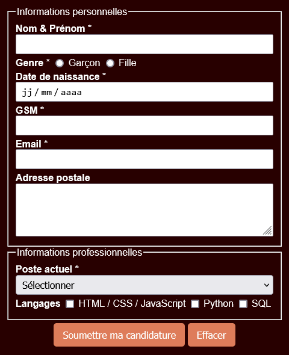
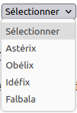
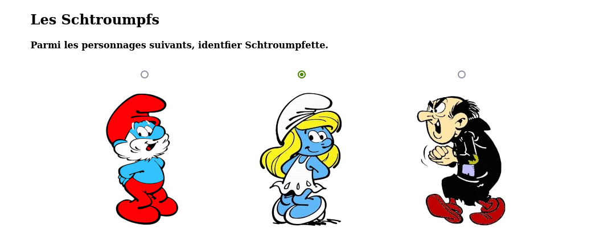
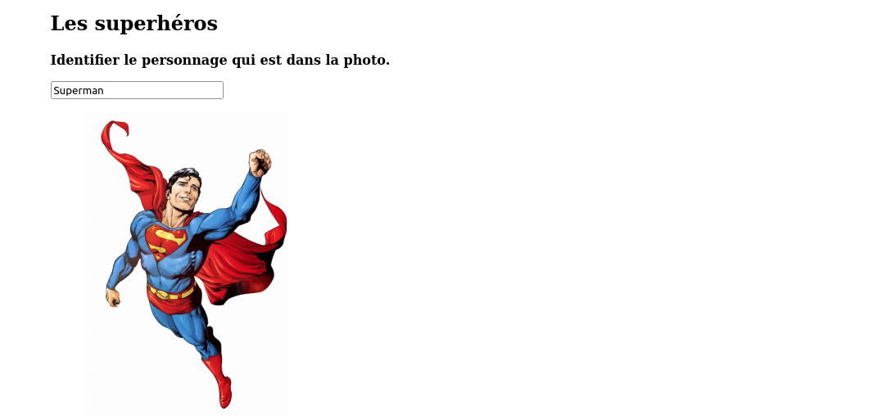
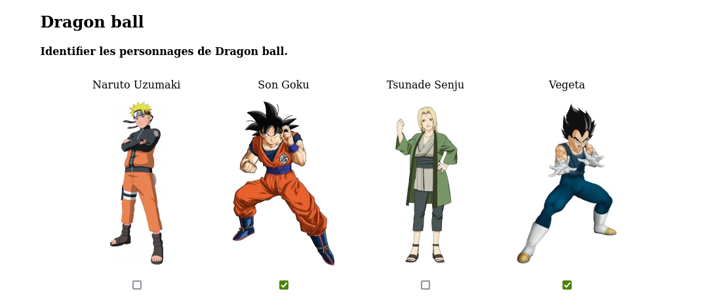
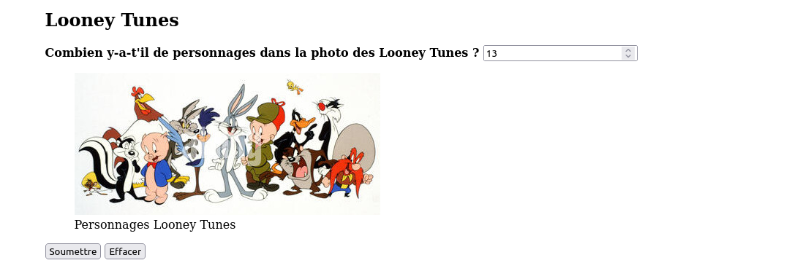

En conception de sites et d'applications Web, les formulaires constituent la passerelle
fondamentale d'interaction entre l'utilisateur et le système d'information. Ils permettent de
recueillir des données saisies par l'internaute (identifiants de connexion, coordonnées,
choix d'options, commentaires, dates, téléversements de documents) et de les transmettre à un serveur
Web pour traitement, enregistrement en base de données ou calcul.
🎯 Objectifs d'apprentissage :
Comprendre le rôle fonctionnel et l'architecture d'échange client-serveur d'un formulaire Web.
Déclarer et configurer le conteneur <form> avec ses attributs clés
(action,
method, target).
Distinguer avec rigueur le comportement, les atouts et les limites des méthodes HTTP
GET
et POST.
Exploiter la balise polyvalente <input> et ses multiples types (text,
password, number, email, tel, date,
time, range, checkbox, radio).
Concevoir des zones de saisie multilignes avec <textarea> et des listes de choix
avec <select>, <optgroup>, <option> et
<datalist>.
Garantir la sémantique et l'accessibilité des formulaires avec les étiquettes
<label> et les
regroupements <fieldset> / <legend>.
Appliquer les contraintes de validation natives (required, readonly,
disabled, pattern, min, max, step).
Intégrer et styliser des formulaires web complets et esthétiques en CSS (Mini-projets : Formulaire de
contact
et Questionnaire BD).
Composants élémentaires d'un formulaire
Un formulaire est constitué de composants interactifs variés. Parmi les plus répandus :
Les champs de texte monolignes :
Les listes déroulantes de sélection :
Les boutons d'action :
Les cases à cocher (sélection multiple) : Je veux :
Les boutons radio (choix exclusif) : Je suis :
Auto-évaluation & Prérequis
Vérifiez vos acquis et réflexes fondamentaux avant de détailler la syntaxe des formulaires.
1. Rôle indispensable de l'attribut name
Que se passe-t-il si un champ de saisie (ex: <input type="text">) ne possède pas
d'attribut name lors de l'envoi du formulaire ?
💡 Cliquez ici pour afficher la réponse
Le champ ne sera pas transmis au serveur !
L'attribut name est obligatoire pour tout contrôle de formulaire dont on
souhaite
exploiter la valeur. Côté serveur, les données sont indexées sous la forme de paires
clé=valeur
où la clé correspond exactement à la valeur de l'attribut name. Sans cet attribut, le
navigateur
ignore complètement le champ lors de la soumission de la requête HTTP.
2. Quand privilégier impérativement la méthode POST ?
Pourquoi ne doit-on jamais utiliser la méthode GET pour envoyer un mot de passe ou des données
confidentielles ?
💡 Cliquez ici pour afficher la réponse
Avec la méthode GET, toutes les données saisies sont concaténées en clair directement dans
l'URL du navigateur (ex : page.php?login=admin&pass=secret123).
Le mot de passe apparaît en clair sur l'écran, accessible à toute personne à proximité.
L'URL reste stockée en clair dans l'historique du navigateur, les journaux serveurs et les proxys.
Elle peut être partagée par inadvertance lors de la copie du lien.
La méthode POST encapsule au contraire les données dans le corps (Body) de
la
requête HTTP, les rendant invisibles dans l'URL et assurant leur confidentialité (lorsqu'elles transitent
en HTTPS).
Transmission & Méthodes HTTP
Attributs de la balise <form>
Tout formulaire Web s'encadre obligatoirement entre la balise ouvrante <form> et la balise
fermante
</form> :
<form action="traitement.php" method="post" target="_self">
<!-- Contrôles de saisie, étiquettes et boutons -->
</form>
Attributs fondamentaux de la balise <form> :
action="URL" :
spécifie l'adresse URL du script ou de la page côté serveur chargée de réceptionner et de traiter les
données
(ex : action="contact.php"). Si la valeur est "#" ou vide, les données sont
soumises à la
même page.
method="GET | POST" :
indique la méthode HTTP employée pour transmettre les données au serveur.
target="_self | _blank | _parent | _top" :
indique la cible d'affichage de la réponse renvoyée par le serveur (ex. _blank pour ouvrir le
résultat
dans un nouvel onglet).
Autres attributs possibles (hors programme) :
autocomplete="on | off" :
active ou désactive la mémorisation et la suggestion automatique des valeurs par le navigateur sur
l'ensemble du formulaire.
enctype="..." :
définit l'encodage des données envoyées. Par défaut, la valeur est
application/x-www-form-urlencoded.
Lors de l'envoi de fichiers (via <input type="file">), il est indispensable de spécifier
enctype="multipart/form-data" avec la méthode POST.
Méthodes de transmission
Le protocole HTTP propose deux méthodes fondamentales pour transférer des données de formulaire. Le choix de
la
méthode influe directement sur la visibilité, la sécurité, la mise en cache et le volume des données
transmises.
Critère
Méthode GET
Méthode POST
Emplacement des données
Ajoutées à la fin de l'URL sous forme de chaîne de requête (Query String) : page.html?nom=Ali&age=17
Encapsulées dans le corps (Body) de la requête HTTP, séparées des en-têtes.
Visibilité pour l'utilisateur
Visible en clair dans la barre d'adresses du
navigateur.
Invisible dans l'URL.
Confidentialité & Sécurité
Très faible : inadapté aux mots de passe, numéros bancaires et données personnelles sensibles.
Beaucoup plus sécurisé : les données ne sont pas exposées dans l'historique ou l'écran.
Limite de volume
Limitée par la taille maximale de l'URL autorisée par le serveur et le navigateur (~2048
caractères).
Virtuellement illimitée (dépend de la configuration du serveur web, adapté aux gros volumes et
fichiers).
Mise en cache & Favoris
Peut être mise en cache, archivée dans l'historique et enregistrée en marque-page (favori).
Jamais mise en cache par défaut, non enregistrable en marque-page. Le navigateur demande
confirmation avant rechargement.
Cas d'usage recommandés
Recherches, filtres de catalogue, pagination, consultation sans modification de données sur le
serveur.
Formulaires de connexion (login), inscriptions, transactions de paiement, envoi de messages et de
fichiers.
Observation réseau
Pour observer concrètement la différence entre les deux méthodes, testons les deux formulaires ci-dessous qui
transmettent les mêmes champs vers la même page réceptrice (assets/miniprojet07/loggedin.html).
Formulaire 1 : Méthode POST
Formulaire 2 : Méthode GET
Expérience 1 : Analyse de la méthode POST
Ouvrez les Outils de développement de votre navigateur avec la touche F12 (ou
Ctrl + Shift + I),
sélectionnez l'onglet Réseau (Network), puis cliquez sur le bouton Login
(POST) :
Dans l'onglet En-têtes (Headers), la méthode de requête est
explicitement POSTL'URL de destination ne comporte aucun paramètre visible : la
confidentialité est préservéeDans l'onglet Charge utile (Payload / Request), les champs
login et pass sont transportés dans le corps
Expérience 2 : Analyse de la méthode GET
Cliquez sur le lien « return to course... » pour revenir à cette page. Réactivez l'enregistrement dans
l'onglet
Réseau (Network) de F12, puis cliquez sur le bouton Login (GET) :
Dans l'onglet En-têtes (Headers), la méthode de requête est
bien GETLes identifiants apparaissent directement en clair dans la
barre d'adresse de l'URL !Le corps de la requête (Request Body / Payload) reste vide car
les données ont voyagé dans l'URL
Formulaire d'authentification
Examinons un formulaire complet de connexion (login) stylisé pour comprendre l'assemblage des éléments :
Conteneur <form> : délimite le formulaire, spécifie l'action et impose
la méthode POST.
Champ texte (type="text") : reçoit le nom d'utilisateur. L'attribut
placeholder="Login" fournit une indication textuelle temporaire.
Champ mot de passe (type="password") : masque la saisie par des ronds ou
étoiles. L'attribut autocomplete="new-password" gère la complétion par les gestionnaires de
mots de passe.
Case à cocher (type="checkbox") : permet de mémoriser la session. L'attribut
booléen checked la coche par défaut.
Étiquette englobante (<label>) : rend le texte « Remember me »
cliquable pour cocher ou décocher la case.
Bouton de soumission (<button type="submit">) : déclenche la
validation et l'expédition du formulaire.
Travail demandé
Créer un fichier HTML nommé login.html.
Insérer la structure HTML5 minimale et recopier le code du formulaire ci-dessus.
Appliquer la feuille de style CSS disponible via le lien login.txt.
Tester la saisie et observer l'interaction avec le bouton et la case à cocher.
Composants de Formulaire
Champs de saisie textuels et numériques
Les champs textuels et numériques permettent à l'utilisateur de taper des valeurs libres ou encadrées par des
règles de format précises.
Composant & Description
Rendu interactif
Code HTML5
Champ de texte
Saisie monoligne libre
<input type="text" name="np"
value="Mariem" placeholder="Nom & Prénom">
Champ mot de passe
Masque les caractères saisis
<input type="password" name="pwd"
value="secret" placeholder="Mot de passe">
Zone de texte (textarea)
Saisie multiligne extensible
La sélection d'options repose sur des composants au comportement bien distinct : choix exclusif avec les
boutons radio, choix multiple avec les cases à cocher, et association ergonomique grâce aux étiquettes.
Composant & Description
Rendu interactif
Code HTML5
Bouton radio
Choix exclusif au sein d'un même groupe (même attribut
name)
<label>
<input type="radio" name="se" value="x86"> Windows 32bits
</label><br>
<label>
<input type="radio" name="se" value="x64" checked> Windows 64bits
</label><br>
<label>
<input type="radio" name="se" value="Linux"> Linux distribution
</label>
Case à cocher (checkbox)
Sélection multiple ou options indépendantes (0, 1 ou plusieurs)
Lorsque le nombre d'options est élevé, les listes déroulantes compactent l'espace d'affichage tout en
structurant les choix. La balise <datalist> permet quant à elle de suggérer des valeurs
sans restreindre la saisie libre.
Composant & Description
Rendu interactif
Code HTML5
Liste déroulante simple
Sélection unique standard sans regroupement (balises <select> et <option>)
<select name="fruit">
<option value="">-- Choisir un fruit --</option>
<option value="pomme">Pomme</option>
<option value="fraise" selected>Fraise</option>
<option value="orange">Orange</option>
<option value="banane">Banane</option>
</select>
Liste avec groupes (<optgroup>)
Organisation hiérarchique. La balise <optgroup> structure les options en sous-catégories non sélectionnables.
Les boutons déclenchent des actions interactives essentielles : soumettre les données saisies au serveur,
réinitialiser les champs à leur état initial ou exécuter un traitement en JavaScript. En HTML5, on utilise
la balise polyvalente <button> (ou l'élément <input>) avec l'attribut
type adéquat :
Composant & Description
Rendu interactif
Code HTML5
Bouton d'envoi (submit)
Transmet les données du formulaire à l'URL cible spécifiée dans l'attribut
action (type par défaut)
<!-- Balise button (recommandée) -->
<button type="submit">Soumettre</button>
<!-- Syntaxe alternative avec input -->
<input type="submit" value="Soumettre">
Bouton de réinitialisation (reset)
Rétablit instantanément tous les champs du formulaire à leurs valeurs
initiales
<!-- Balise button (recommandée) -->
<button type="reset">Réinitialiser (RAZ)</button>
<!-- Syntaxe alternative avec input -->
<input type="reset" value="Réinitialiser">
Bouton neutre (button)
Bouton générique sans action native par défaut. Son comportement est programmé
via JavaScript (attribut onclick ou écouteur d'événement)
Différence clé entre <button> et <input type="...">
Contrairement à <input> dont l'intitulé est restreint à une simple chaîne de texte brut
(attribut value), la balise <button>...</button> est un conteneur qui peut
embarquer du contenu HTML riche (icônes, images, mise en gras, etc.) :
readonly (lecture seule) : le champ n'est pas modifiable, mais sa valeur EST
transmise au serveur lors de la soumission.
disabled (désactivé) : le champ est grisé, inactif, et sa valeur N'EST PAS
transmise au serveur.
<!-- Lecture seule : valeur envoyée lors du submit -->
<input type="text" value="Code fixe" readonly>
<!-- Désactivé : valeur NON transmise lors du submit -->
<input type="text" value="Non modifiable" disabled>
<textarea disabled>Zone inactive</textarea>
Ateliers Pratiques
Application 7 : Formulaire de contact
Mission : Réaliser un formulaire Web de contact complet pour développeur en intégrant
l'ensemble des balises, contrôles de saisie, étiquettes sémantiques et règles de mise en page CSS étudiées.
Aperçu du modèle visuel attendu

Formulaire de contact développeur avec champs requis et mise en
page CSS
Cahier des charges & Spécifications
Les champs obligatoires doivent être signalés par un astérisque (*) et comporter l'attribut
required.
Le champ Poste actuel est une liste déroulante organisée avec <optgroup>
selon la hiérarchie suivante :
Web : Frontend developer, Backend developer, Fullstack developer
Data science : Datascience engineer
Autres : Python developer, C++ developer
Insérer une zone de texte multiligne <textarea> pour la rédaction du message.
Fournir les boutons de soumission (Envoyer) et de réinitialisation (Annuler).
Mise en forme CSS : centrer le formulaire, appliquer des espacements internes
(padding) confortables,
des bordures adoucies et une harmonie de couleurs élégante.
Application 8 : Personnages de bandes dessinées
Mission : Concevoir un questionnaire interactif en cinq questions portant sur
l'identification
de personnages de bandes dessinées, en mobilisant diverses techniques d'association de contrôles et
d'étiquettes visuelles.
Question 1 : Sélection du personnage sous chaque avatar
Les images des personnages servent d'étiquettes (<label>) pour sélectionner la liste
déroulante située juste en dessous.
Les éléments de la zone de liste sont présentés dans la figure ci-après :

Chacune des quatre listes doit obligatoirement être renseignée par l'utilisateur (attribut
required).
Question 2 : Boutons radio avec avatars

Question 2 : Choix exclusif avec bouton radio au-dessus de
l'image
Les images des personnages sont des étiquettes (<label>) qui activent le bouton radio
situé au-dessus d'elles.
Les valeurs respectives transmises par les trois boutons radio sont : a, b et
c.
L'utilisateur doit obligatoirement sélectionner une réponse parmi les trois propositions.
Question 3 : Champ de texte avec suggestions (datalist)

Question 3 : Saisie textuelle guidée par autocomplétion
Le champ de texte est lié à une <datalist> qui propose les suggestions suivantes :
Spiderman
Superman
Batman
Megaman
Catman
La saisie d'une réponse à cette question est obligatoire.
Question 4 : Cases à cocher multiples

Question 4 : Sélection multiple par case à cocher sous l'image
Les images des personnages sont des étiquettes (<label>) qui permettent de cocher la
case correspondante.
Les valeurs respectives associées aux cases sont : a, b, c et
d.
La réponse à cette question est facultative (aucune obligation de saisie).
Question 5 : Champ numérique borné

Question 5 : Note numérique comprise entre 1 et 20
Le champ de saisie est de type numérique (type="number").
Les valeurs permises sont comprises entre 1 (minimum) et 20 (maximum). Le champ
affiche la valeur 5 par défaut.
La réponse à cette question est obligatoire.
Boutons de fin de formulaire : Le formulaire doit comporter un bouton d'envoi
<button type="submit"> et un bouton de réinitialisation
<button type="reset">.